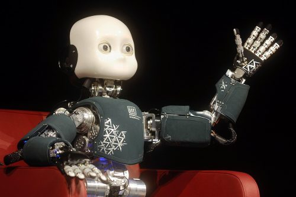

Los robots son creados con el propósito de resolver alguna necesidad humana específica, y no todos tienen forma de animales o personas, muchos incluso están formados simplemente por piezas sin forma alguna. Sin embargo, todos los robots que se crean hoy en día poseen tres elementos indispensables: Componente Mecánico (estructura/movimiento), Componente Eléctrico (fuente de energía), y un Componente de Computación o Programación (cerebro del robot).
Creado por Honda en el 2000. Es capaz de caminar en dos piernas y reconocer los rostros y voces, identifica gestos, posturas y objetos en movimientos.
Diseñado para entender cómo aprenden los niños interactuando con el mundo desde que nacen y así ayudar al desarrollador de la inteligencia artificial.

Se mueve en dos piernas y es buenísimo jugando ping-pong gracias a un sistema de inteligencia artificial que le permite aprender y mejorar sus habilidades.
Corea del sur, uno de los países con mas robots del mundo estuvo desarrollando un código ético para robots llamado carta ética de los robots. Se estuvo creando para evitar que el abuso de persona sobre los robots pueda afectar a otras personas.